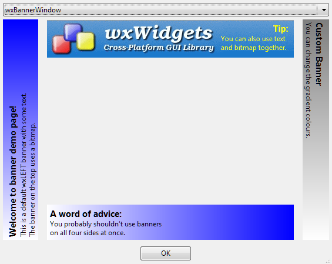

| Version: 2.9.4 |
#include </home/zeitlin/src/wx/github/interface/wx/bannerwindow.h>
 Inheritance diagram for wxBannerWindow:
Inheritance diagram for wxBannerWindow:A simple banner window showing either a bitmap or text.
Banner windows can be used to present some overview of the current window contents to the user in an aesthetically pleasant way. They are typically positioned along the left or top edge of the window (although this class also supports right- and bottom-aligned banners) and show either a bitmap with a logo or a few lines of text on a gradient-filled background.
Using this class is very simple, e.g.:
MyFrame::MyFrame(...)
{
... create the frame itself ...
// Create and initialize the banner.
wxBannerWindow* banner = new wxBannerWindow(this, wxTOP);
banner->SetText("Welcome to my wonderful program",
" Before doing anything else, you need to connect to "
"the online server.\n"
" Please enter your credentials in the controls below.");
// And position it along the left edge of the window.
wxSizer* sizer = new wxBoxSizer(wxVERTICAL);
sizer->Add(banner, wxSizerFlags().Expand());
... add the rest of the window contents to the same sizer ...
SetSizerAndFit(sizer);
}
This class is currently implemented generically and so looks the same under all platforms.
|  |
Public Member Functions | |
| wxBannerWindow () | |
| Default constructor, use Create() later. | |
| wxBannerWindow (wxWindow *parent, wxDirection dir=wxLEFT) | |
| Convenient constructor that should be used in the majority of cases. | |
| wxBannerWindow (wxWindow *parent, wxWindowID winid, wxDirection dir=wxLEFT, const wxPoint &pos=wxDefaultPosition, const wxSize &size=wxDefaultSize, long style=0, const wxString &name=wxBannerWindowNameStr) | |
| Full constructor provided for consistency with the other classes only. | |
| bool | Create (wxWindow *parent, wxWindowID winid, wxDirection dir=wxLEFT, const wxPoint &pos=wxDefaultPosition, const wxSize &size=wxDefaultSize, long style=0, const wxString &name=wxBannerWindowNameStr) |
| Really create the banner window for the objects created using the default constructor. | |
| void | SetBitmap (const wxBitmap &bmp) |
| Provide the bitmap to use as background. | |
| void | SetText (const wxString &title, const wxString &message) |
| Set the text to display. | |
| void | SetGradient (const wxColour &start, const wxColour &end) |
| Set the colours between which the gradient runs. | |
| wxBannerWindow::wxBannerWindow | ( | ) |
| wxBannerWindow::wxBannerWindow | ( | wxWindow * | parent, |
| wxDirection | dir = wxLEFT |
||
| ) |
Convenient constructor that should be used in the majority of cases.
The only really important arguments of the full constructor below are parent and dir so this class provides a convenient constructor taking only them.
The banner orientation changes how the text in it is displayed and also defines where is the bitmap truncated if it's too big to fit but doesn't do anything for the banner position, this is supposed to be taken care of in the usual way, e.g. using sizers.
| wxBannerWindow::wxBannerWindow | ( | wxWindow * | parent, |
| wxWindowID | winid, | ||
| wxDirection | dir = wxLEFT, |
||
| const wxPoint & | pos = wxDefaultPosition, |
||
| const wxSize & | size = wxDefaultSize, |
||
| long | style = 0, |
||
| const wxString & | name = wxBannerWindowNameStr |
||
| ) |
Full constructor provided for consistency with the other classes only.
Prefer to use the shorter constructor documented above. You should rarely, if ever, need to use non-default values for any other parameters: as the banner window doesn't generate any events, its identifier is not particularly useful; its position and size will be almost always managed by the containing sizer and it doesn't have any specific styles. So only the parent and the banner direction need to be specified.
| bool wxBannerWindow::Create | ( | wxWindow * | parent, |
| wxWindowID | winid, | ||
| wxDirection | dir = wxLEFT, |
||
| const wxPoint & | pos = wxDefaultPosition, |
||
| const wxSize & | size = wxDefaultSize, |
||
| long | style = 0, |
||
| const wxString & | name = wxBannerWindowNameStr |
||
| ) |
Really create the banner window for the objects created using the default constructor.
It's an error to call Create() for the objects created using non-default constructor.
| void wxBannerWindow::SetBitmap | ( | const wxBitmap & | bmp | ) |
Provide the bitmap to use as background.
Notice that ideally the bitmap should be big enough to always cover the entire banner, e.g. for a horizontal banner with wxTOP style its width should be bigger than any reasonable window size. Otherwise the bitmap is extended to cover the entire window area with a solid colour taken from the bitmap pixel on the edge in which direction the extension occurs so all bitmap pixels on this edge (top for wxLEFT, right for wxTOP and wxBOTTOM and bottom for wxRIGHT) should have the same colour to avoid jarring discontinuity.
If, on the other hand, the bitmap is bigger than the window size, then it is truncated. For wxLEFT orientation the bitmap is truncated from the top, for wxTOP and wxBOTTOM -- from the right and for wxRIGHT -- from the bottom, so put the most important part of the bitmap information in the opposite direction where it will never be truncated.
If no valid background bitmap is specified, the banner draws gradient background but if a valid bitmap is given here, the gradient is not draw and the start and end colours specified for it are ignored.
| bmp | Bitmap to use as background. May be invalid to indicate that no background bitmap should be used. |
Set the colours between which the gradient runs.
The gradient colours are ignored if SetBitmap() is used.
Set the text to display.
This is mutually exclusive with SetBitmap().
Title is rendered in bold and should be single line, message can have multiple lines but is not wrapped automatically, include explicit line breaks in the string if you want to have multiple lines.